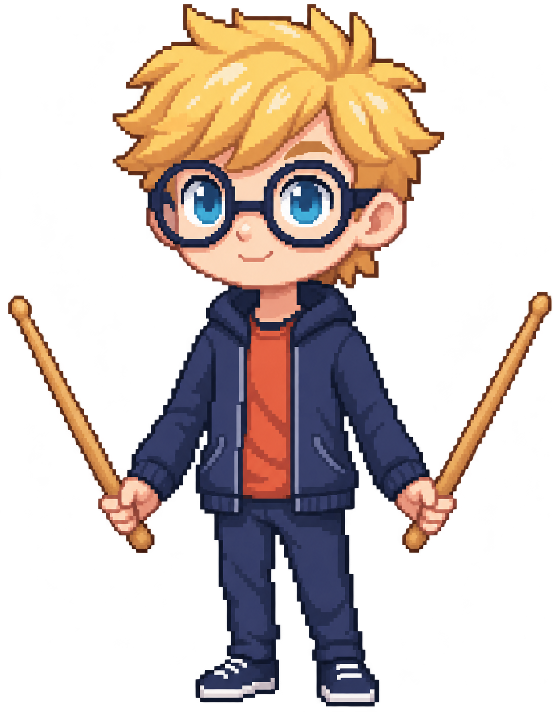
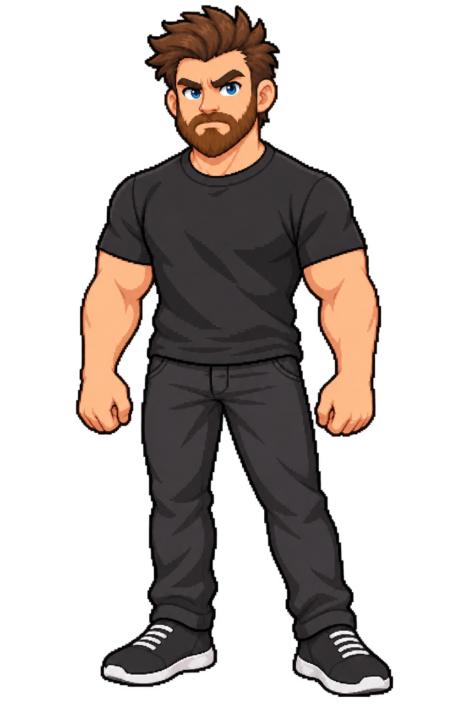
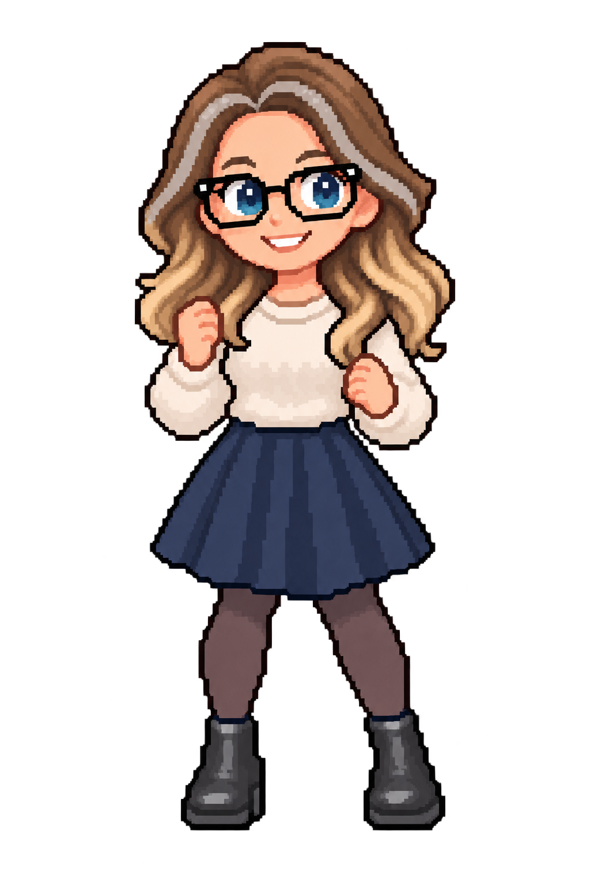
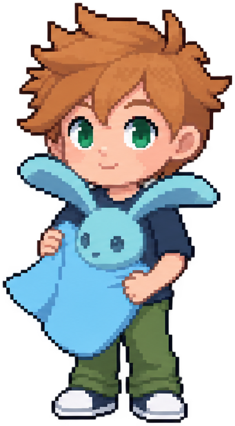

<!doctype html><html lang="en"><meta charset="utf-8"><title>Tiny Racers marketing artwork</title><style>
*{box-sizing:border-box}body{margin:0;background:#11263a;color:#fff2d4;font-family:Arial,sans-serif;width:100vw;height:100vh;overflow:hidden}#art{position:relative;width:100%;height:100%;padding:6%;isolation:isolate;background:radial-gradient(ellipse at 90% 85%,#214958,transparent 65%)}.eyebrow{font-weight:700;letter-spacing:.3em;color:#b3e8bd;font-size:clamp(16px,2vw,30px)}h1{font-size:clamp(60px,8.3vw,160px);line-height:.92;margin:4% 0 2%;letter-spacing:-.055em;max-width:67%}h1 span{display:block;color:#fbd178}.sub{font-size:clamp(22px,2.5vw,44px);line-height:1.4;max-width:59%;color:#d0e2e6}.tag{position:absolute;bottom:7%;left:6%;font-size:clamp(16px,1.8vw,30px);color:#b3e8bd}.moon{position:absolute;right:8%;top:10%;width:8vw;height:8vw;border-radius:100%;background:#fbd178;box-shadow:0 0 90px #fbd17813;z-index:-1}.road{position:absolute;width:70%;height:58%;border:4vw solid #203f4c;border-radius:50%;right:-18%;bottom:-20%;transform:rotate(-22deg);z-index:-1}.road:after{content:'';position:absolute;inset:-2vw;border:3px dashed #a1c5b655;border-radius:50%}.family{position:absolute;right:2%;bottom:12%;width:50%;height:46%;display:flex;align-items:flex-end;justify-content:center;gap:0}.family img{object-fit:contain;image-rendering:pixelated;width:auto;height:92%;filter:drop-shadow(0 15px 8px #08172780)}.family .child{height:69%;width:auto}.family img:nth-child(2){margin-left:-5%}.family img:nth-child(3){margin-left:-4%}.stars{position:absolute;inset:0;z-index:-1;background-image:radial-gradient(#aacdd1 1.5px,transparent 1.5px);background-size:170px 130px;opacity:.3}.pill{display:inline-block;padding:14px 22px;border:1px solid #628087;border-radius:100px;font-size:22px;margin-top:20px;color:#fff2d4}.square h1{font-size:12vw;max-width:95%;margin-top:8%}.square .sub{max-width:90%;font-size:3vw}.square .family{bottom:9%;height:38%;width:80%;right:10%}.square .tag{bottom:4%;font-size:2.5vw}.portrait h1{font-size:15vw;max-width:100%;margin-top:13%}.portrait .sub{font-size:5vw;max-width:94%}.portrait .family{height:28%;width:100%;right:0;bottom:15%}.portrait .tag{font-size:3.5vw;bottom:6%;max-width:85%;line-height:1.6}.portrait .eyebrow{font-size:3vw}.portrait .moon{width:16vw;height:16vw;top:44%}.step h1{font-size:6vw;max-width:70%;line-height:1.05}.step .sub{max-width:65%;font-size:2.7vw}.step .family{width:25%;height:42%;right:4%}.step .family img{display:none}.step .family img:first-child{display:block;width:100%;height:100%}.number{font-size:2.2vw;color:#b3e8bd;margin-top:5%;letter-spacing:.15em}
.info h1{font-size:6vw;max-width:52%}.info .sub{max-width:43%;font-size:2.3vw}</style><main id="art"><div class="stars"></div><div class="moon"></div><div class="road"></div><div class="eyebrow">DON’T GO TO BED</div><div class="number" hidden></div><h1>TINY<span>RACERS.</span></h1><div class="sub">One more race before bed?</div><div class="family"></div><div class="tag">1–4 PLAYERS · 3 TRACKS · ONE SHARED SCREEN</div></main><script>
const q=new URLSearchParams(location.search),art=document.querySelector('#art');if(innerHeight>innerWidth*1.2)art.classList.add('portrait');else if(innerWidth/innerHeight<1.3)art.classList.add('square');
const variants={
 trailer:['TINY<span>RACERS.</span>','Your phone. Your steering wheel.','ONE MORE RACE BEFORE BED?'],
 tutorial:['READY.<span>SET. STEER.</span>','How to play Tiny Racers.','A QUICK START FOR THE WHOLE FAMILY'],
 hackathon:['SMALL CARS.<span>BIG TROUBLE.</span>','A family racing game for the TV.','HACKATHON BUILD · ACTUAL GAMEPLAY'],
 connect:['YOUR PHONE.<span>YOUR WHEEL.</span>','Open Tiny Racers on the TV. Scan its QR code.','INTERNET REQUIRED · NO CERTIFICATE INSTALL'],
 ready:['CHOOSE.<span>HOLD. GO.</span>','Pick your racer. Lock screen rotation. Tap Ready and hold still.','START WITH GENTLE STEERING: 50%'],
 rules:['KEEP UP.<span>STAY IN.</span>','The camera pulls back as the pack spreads. Catch up before you’re knocked out.','LAST RACER STANDING SCORES · EVERYONE RETURNS'],
 finish:['ONE MORE<span>RACE?</span>','Most points after the chosen laps wins.','DON’T GO TO BED: TINY RACERS'],
 setup:['FIRST TIME<span>ON IPAD?</span>','Scan the TV’s QR. Allow motion when asked, then hold straight.','LOCK SCREEN ROTATION · TAP READY'],
 options:['MAKE IT<span>YOUR RACE.</span>','Gentle steering. Automatic items. Eight UI languages.','PAUSE → OPTIONS'],
 credits:['MADE FOR<span>ONE MORE GO.</span>','By James Cullimore, with the Don’t Go To Bed family.','MUSIC: “UPBEAT DRUMS” — LIBORIO CONTI'],
 architecture:['PHONE → RELAY<span>→ TV.</span>','Secure browser controls. The TV runs the race.','ANDROID TV EMULATOR · HACKATHON PROTOTYPE'],
};const key=q.get('card');if(['connect','setup','architecture'].includes(key))art.classList.add('info');if(variants[key]){const [title,sub,tag]=variants[key];document.querySelector('h1').innerHTML=title;document.querySelector('.sub').textContent=sub;document.querySelector('.tag').textContent=tag;}if(q.has('step')){art.classList.add('step');const n=document.querySelector('.number');n.hidden=false;n.textContent=q.get('step');}if(q.has('subtitle'))document.querySelector('.sub').textContent=q.get('subtitle');
</script></html>
